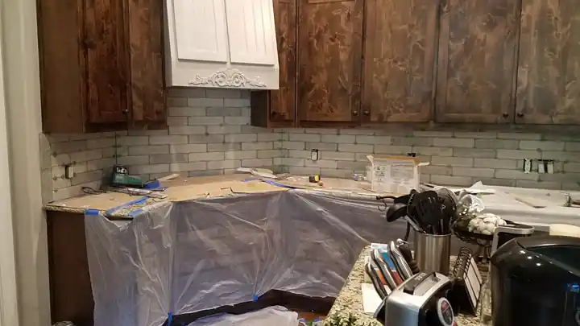

Project Challenge
The kitchen wall needed a durable backsplash that would complement the existing cabinets, countertops and stainless-steel appliances.
Real Project • Arlington, Texas
Kitchen backsplash update featuring a gray glass mosaic installed between the countertops and upper cabinets for a modern reflective finish.
Call for a Free EstimateThe kitchen wall needed a durable backsplash that would complement the existing cabinets, countertops and stainless-steel appliances.
Installed gray glass mosaic tile with careful layout, cuts and grout joints throughout the backsplash area.
Project duration: Approximately 2 days
Completed: 2018-06-04
Representative photos from Luna General Contractors’ real Dallas–Fort Worth kitchen remodeling portfolio.



General contracting in Arlington · Kitchen Remodeling in Arlington